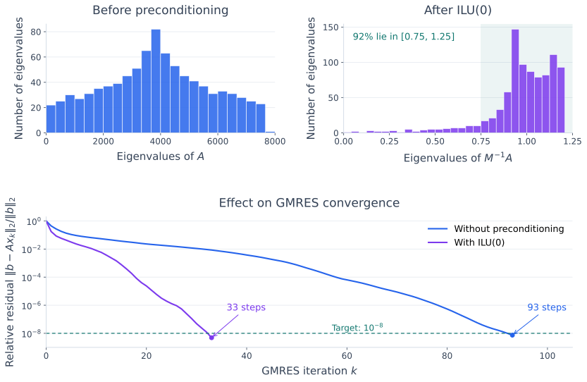

Preconditioning#
CG and GMRES can require many iterations when their Krylov spaces contain good approximations only slowly. For CG, a large condition number weakens the convergence bound, although eigenvalue clustering can still give rapid convergence. For nonsymmetric systems, GMRES convergence also depends on the eigenvectors and, more generally, on how polynomials of the matrix act on the residual. Eigenvalues alone do not determine its behavior.
Preconditioning changes the system seen by the iterative method while preserving the solution of \(Ax=b\). The aim is to make each iteration more effective without adding too much work. This section surveys the main approaches; their usefulness depends on both the matrix and the computing hardware.
The Goal of a Preconditioner#
Let \(A\) be nonsingular. We choose a nonsingular matrix \(M\) that approximates \(A\) in a useful way and is inexpensive to solve with. Applying the preconditioner means computing
We normally do not form \(M^{-1}\). We provide a procedure that solves with \(M\), perhaps using sparse factors, local solves, or a multigrid cycle.
A useful preconditioner balances three costs: construction, storage, and application at every iteration. Fewer iterations do not necessarily mean a faster solve if the preconditioner is expensive. Setup can be worthwhile when reused for several right-hand sides.
The ideal choice \(M=A\) gives \(M^{-1}A=I\), but then applying the preconditioner requires solving the original problem. Practical choices retain enough of the structure of \(A\) to help convergence while making the solve cheaper. Approximating every entry accurately is not the goal; the effect on the iterative method matters.
Left, Right, and Symmetric Preconditioning#
The placement of the preconditioner affects both the matrix and the residual minimized by GMRES. In this discussion, \(M\) is fixed and its inverse is applied as a linear operation.
Left Preconditioning#
Multiply the equation by \(M^{-1}\):
The residual of this transformed system is \(M^{-1}(b-Ax)\). Thus left-preconditioned GMRES minimizes \(\|M^{-1}(b-Ax)\|_2\) over its current search space. This is a weighted measure of the original residual; it can be small even when \(\|b-Ax\|_2\) is not. Check the original residual before accepting the solution.
Right Preconditioning#
Introduce \(y=Mx\), so \(x=M^{-1}y\):
Now the transformed residual is exactly \(b-AM^{-1}y=b-Ax\). Right-preconditioned GMRES therefore minimizes the original Euclidean residual norm.
For the same initial approximation \(x_0\), use \(y_0=Mx_0\) in the right-preconditioned system. With a fixed \(M\), the two methods actually offer the same correction space in the original variables:
This follows by applying \(M^{-1}\) to each generating vector: \(M^{-1}(AM^{-1})^jr_0=(M^{-1}A)^jM^{-1}r_0\). The iterates can differ because left and right preconditioning minimize different residual norms. The PETSc discussion of preconditioning explains these residual choices in solver implementations.
Symmetric Preconditioning for CG and MINRES#
For SPD \(A\), choose an SPD preconditioner \(M\). Although \(M^{-1}A\) generally is not symmetric in the Euclidean inner product, we can describe an equivalent SPD system. Write \(M=CC^T\), with \(C\) nonsingular, and set \(y=C^Tx\). Then
Here \(C^{-T}=(C^T)^{-1}\). Symmetry is preserved, and for every nonzero \(v\),
Thus ordinary CG applies to the transformed system. Its condition-number bound uses \(\kappa_2(\widetilde A)\), the ratio of this SPD matrix’s extreme eigenvalues. Since
the two matrices have the same eigenvalues, although their Euclidean condition numbers need not agree.
The practical preconditioned CG algorithm implements this transformation using only solves \(Mz=r\); it need not form \(C\) or \(\widetilde A\). For symmetric indefinite \(A\), the same construction preserves symmetry and allows preconditioned MINRES with an SPD preconditioner. Its residual minimization then uses \(\|C^{-1}r\|_2=\sqrt{r^TM^{-1}r}\), so the original Euclidean residual need not decrease at every step. Positive definiteness of \(A\) is still required for standard CG.
Classical Iteration Preconditioners#
The classical splitting methods provide simple preconditioners. With the convention \(A=D-L-U\), \(D\) is diagonal, while \(-L\) and \(-U\) are the strictly lower and upper parts of \(A\).
Jacobi uses \(M=D\). Application is componentwise division, so setup and storage are small and the work is easy to parallelize. It requires nonzero diagonal entries. For SPD \(A\), \(D\) is positive definite and is a valid CG preconditioner. It corrects differences in diagonal scales but can leave strong coupling between unknowns untreated.
Block Jacobi groups unknowns and uses a block diagonal \(M\), usually containing principal diagonal blocks of \(A\). Each application solves the blocks independently. This captures coupling within a block and retains parallelism, but ignores coupling between blocks. Principal blocks of an SPD matrix are SPD, so exact block solves give an SPD preconditioner.
Gauss-Seidel uses \(M=D-L\), and SOR uses
Both apply a forward triangular solve and depend on the ordering of the unknowns. These solves have dependencies that limit parallelism. The preconditioners are generally nonsymmetric, so a forward sweep alone does not provide the SPD preconditioner required by CG.
Symmetric SOR (SSOR) combines forward and backward sweeps. For SPD \(A\), where \(U=L^T\), its preconditioning matrix is
This is SPD: the two triangular factors are transposes, \(D\) is positive diagonal, and the scalar is positive. At \(\omega=1\) it gives symmetric Gauss-Seidel. Applying its inverse requires two triangular solves and a diagonal scaling.
These methods are inexpensive starting points. They are also used as smoothers in multigrid: a few sweeps reduce error components that the coarse problem does not represent well.
Incomplete Factorizations: ILU and IC#
Sparse LU and Cholesky factorizations create fill-in, entries in the factors at positions where the original matrix was zero. Incomplete factorizations reduce storage and work by discarding selected entries during elimination:
Incomplete LU (ILU): Construct sparse triangular factors with \(A\approx LU=M\). Application requires solving \(Lw=r\), then \(Uz=w\). ILU is commonly paired with GMRES for nonsymmetric systems.
Incomplete Cholesky (IC): For SPD problems, construct \(A\approx CC^T=M\). If \(C\) is nonsingular, this gives an SPD preconditioner suitable for CG. Application uses a forward and a backward solve.
The main ways to control fill are:
ILU(0) and IC(0): Allow factor entries only in the corresponding triangular positions of the original sparsity pattern, including the diagonal. Numerical cancellation can still make an allowed entry zero.
Level-of-fill methods, ILU(\(k\)) and IC(\(k\)): Assign levels to potential fill positions according to the elimination process and retain those up to level \(k\). Larger levels permit more fill and usually more work and storage; they do not guarantee a particular improvement in convergence.
Threshold methods, such as ILUT: Drop entries according to their magnitudes relative to a chosen scale. ILUT commonly combines a drop tolerance with a limit on the number of retained entries per row.
These are useful general-purpose choices, but they can break down through zero, small, or unsuitable pivots. Even SPD \(A\) does not guarantee that an arbitrary incomplete Cholesky construction succeeds: dropping entries changes the subsequent pivots. Scaling, reordering, allowing more fill, or adding a suitable positive diagonal shift can help. The Netlib discussion of incomplete factorizations describes these issues.
Effectiveness depends on the ordering and dropping rules. Triangular solves can be difficult to parallelize efficiently, although parallel and block variants are available. IC is one option for CG, alongside diagonal, block, and multilevel preconditioners.
Example: The 2D Poisson Matrix and ILU(0)#
Consider \(-u_{xx}-u_{yy}=f\) on the unit square, with \(u=0\) on its boundary. Use an \(m\times m\) grid of interior points, with spacing \(h=1/(m+1)\), and order the unknowns row by row. The standard five-point difference approximation gives an \(m^2\times m^2\) SPD matrix \(A\): its diagonal entries are \(4/h^2\), and each horizontal or vertical neighbor contributes \(-1/h^2\).
Its eigenvalues are known explicitly:
The corresponding grid vectors have entries \(\sin(p\pi ih)\sin(q\pi jh)\). Applying the stencil separates into one-dimensional differences in the two coordinate directions, so their eigenvalue contributions add. This is the standard sine-mode construction for the Poisson equation.
Now compute strict ILU(0), keeping the original factor sparsity and using this same ordering, without pivoting or diagonal modification. Set \(M=LU\). In this particular symmetric problem, \(U=DL^T\) for a positive diagonal matrix \(D\), so \(M=LDL^T\) is SPD. We compute all eigenvalues of \(M^{-1}A\) numerically using its equivalent symmetric transformation, as described above. This does not require forming an inverse. The calculation also verifies the factor sparsity, so it is genuinely ILU(0), rather than an ILU approximation with extra fill.
For \(m=30\), there are 900 unknowns:
Matrix |
Smallest eigenvalue |
Largest eigenvalue |
Largest/smallest ratio |
|---|---|---|---|
\(A\) |
\(19.7223\) |
\(7668.28\) |
\(388.8\) |
\(M^{-1}A\) |
\(0.03420\) |
\(1.20455\) |
\(35.2\) |
The improvement is more than a change of scale: the eigenvalue ratio decreases, and about \(92\%\) of the preconditioned eigenvalues lie in \([0.75,1.25]\). The ideal preconditioner would put every eigenvalue at \(1\).
This clustering makes the polynomial problem easier. For example, \(p(\lambda)=(1-\lambda)^k\) equals one at zero and has magnitude at most \((1/4)^k\) on \([0.75,1.25]\). A few smaller eigenvalues remain outside this cluster and still need to be reduced. This connects the spectral picture to the polynomial convergence arguments for CG and GMRES.


Fig. 30 Poisson on a \(30\times30\) interior grid of the unit square. Top: the complete eigenvalue distributions before and after natural-order ILU(0); note the different horizontal scales. Bottom: computed unrestarted GMRES convergence from \(x_0=0\), using the same fixed random right-hand side. The preconditioned run uses right preconditioning, so both curves measure the original relative residual \(\|b-Ax_k\|_2/\|b\|_2\). The matrices \(AM^{-1}\) and \(M^{-1}A\) have the same eigenvalues. Reorthogonalization preserves the basis orthogonality in this experiment.#
The spectral improvement is accompanied by fewer iterations: 33 rather than 93 to reach \(10^{-8}\). Each preconditioned step also needs two triangular solves, so iteration counts alone do not measure total running time.
Here the positive eigenvalue ratio is the condition number of the equivalent SPD matrix, not generally the Euclidean condition number of \(M^{-1}A\). The SPD property of this ILU(0) product is specific to the symmetric construction used here; a generic ILU preconditioner need not preserve symmetry or positive definiteness.
Sparse Approximate Inverses#
An alternative is to construct a sparse matrix \(B\) that approximates \(A^{-1}\) directly. We use a different symbol because \(B\) represents the operation previously written \(M^{-1}\). Application is a sparse matrix-vector product:
A common sparse approximate inverse (SPAI) construction chooses entries in a prescribed or adaptively enlarged sparsity pattern to make
small for left or right preconditioning, respectively. Here \(\|\cdot\|_F\) is the Frobenius norm. The construction reduces to small least-squares problems for rows or columns of \(B\).
Application is easy to parallelize because it avoids triangular solves. The difficulty is obtaining a useful inverse approximation with few nonzeros: a sparse \(A\) can have a dense inverse, and setup can be expensive. There is no general ranking of SPAI and ILU; the useful trade-off depends on accuracy, sparsity, and hardware.
An unconstrained SPAI need not be symmetric or positive definite, even when \(A\) is SPD. For CG, an SPD construction is needed, such as a factored approximate inverse \(B=G^TG\) with nonsingular \(G\).
Polynomial Preconditioners#
We can also approximate \(A^{-1}\) by a low-degree polynomial \(B=p(A)\). Applying \(B\) uses repeated matrix-vector products, avoiding factorization and triangular solves. The Chebyshev iteration provides one way to build such an approximation when suitable spectral bounds are available.
This approach can suit parallel hardware, but each application costs several matrix-vector products. For SPD \(A\), the polynomial must be positive at every eigenvalue to make \(p(A)\) an SPD preconditioner. The degree and spectral information determine its usefulness.
Multigrid Preconditioners#
Local relaxation often removes rapidly varying error while leaving slowly varying error. Multigrid combines relaxation with corrections on coarser spaces, where the remaining error is easier to represent and remove. A cycle supplies an approximate solve \(z\approx A^{-1}r\) for the outer Krylov method. With fixed linear relaxation and coarse solves, running a fixed cycle from zero defines a linear preconditioning operation.
Geometric multigrid constructs the hierarchy from meshes and the underlying differential equation. Algebraic multigrid (AMG) builds coarse spaces mainly from the matrix. AMG may also use supplied information about slowly varying modes, such as the rigid-body motions in elasticity. It does not require an explicit geometric mesh.
For suitable elliptic problems, a well-designed hierarchy can have \(O(n)\) work per cycle and an iteration count that stays bounded as the mesh is refined. These properties require effective smoothing and coarse correction, with controlled storage across levels. They are not automatic: strong anisotropy, coefficient jumps, and coupled equations can require specialized choices.
For CG, the entire approximate-inverse operation must be SPD. Compatible coarse operators, a positive definite coarse solve, and appropriately paired smoothing steps are needed. A generic multigrid cycle is not automatically suitable. For example, the hypre AMG documentation explains the need for symmetric smoothing with CG.
Domain Decomposition#
Domain decomposition divides the unknowns into subdomains, approximately solves local problems, and combines the corrections. The local solves can run in parallel. Block Jacobi is a simple nonoverlapping example; additive Schwarz allows overlapping subdomains and adds their local corrections.
Local solves handle nearby interactions, but information can travel slowly across many subdomains. A coarse space adds global corrections and is often essential to keep iteration counts controlled as the number of subdomains grows. Overlap, the coarse space, local solver accuracy, and communication all affect performance.
SPD variants can be used with CG. Other variants, including some ways of combining local corrections, are nonsymmetric and are better paired with GMRES. Domain decomposition and multigrid can also be combined, for example by using multigrid inside each subdomain.
Block and Physics-Based Preconditioners#
Coupled equations often give a natural block structure. A block diagonal preconditioner approximately solves each field separately. A block triangular preconditioner also accounts for coupling between fields.
For example, eliminating the first block of
leads to the Schur complement
assuming \(A_{11}\) is invertible. A block factorization preconditioner uses inexpensive approximations to the solves with \(A_{11}\) and \(S\). Neither inverse needs to be formed. This connects preconditioning to the block elimination developed earlier.
Such methods are useful for problems such as velocity-pressure systems in fluid flow. Their strength comes from representing the coupling, but designing a useful approximation to \(S\) requires knowledge of the equations. Block triangular choices are generally nonsymmetric; SPD block diagonal choices can preserve the structure needed by CG or MINRES.
Choosing and Applying a Preconditioner#
Start with the structure of the problem. Diagonal or block scaling is inexpensive. ILU and IC retain more local coupling. Multigrid and domain decomposition add corrections over larger spatial scales. Block methods exploit coupling between different fields. These families are often combined.
Compare total time and memory, including setup, application, and communication. Also check the outer method’s requirements: standard CG and preconditioned MINRES need an SPD preconditioning operation.
The discussion above assumes a fixed linear operation. If an inner solve is stopped adaptively, its action may vary between iterations or be nonlinear in the right-hand side. Standard fixed-preconditioner theory then does not apply directly. Flexible GMRES accommodates such preconditioning; the PETSc flexible GMRES documentation gives examples.
The next section derives PCG from the symmetric transformation above. We keep the same convention: \(M\approx A\), and applying the preconditioner means solving \(Mz=r\). The implementation uses this solve without needing the factor \(C\).